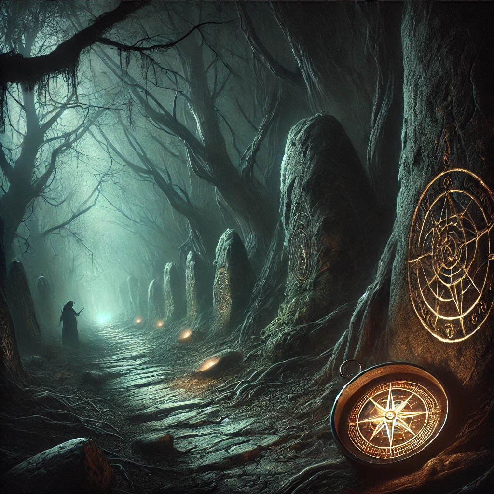

The right path twists sharply, leading into a darker part of the forest. Shadows shift and dance across the ground, and the air feels thick with anticipation. The faint scent of damp earth and ancient stone surrounds you, and the glow from the compass in your hand grows more intense, as if urging caution.
Strange whispers seem to emanate from the trees, their meaning unclear yet strangely familiar. The path narrows, and you notice faint glowing symbols carved into the rocks lining the trail. A faint breeze brushes past you, carrying an unspoken question: will you continue?
A deep voice, barely above a whisper, resonates within your mind:
“The right path is for those who seek to confront their fears. Beyond the shadows lies truth, but only for those willing to face it.”
The path ahead leads deeper into darkness, where faint, flickering light hints at what lies beyond.

What will you do?